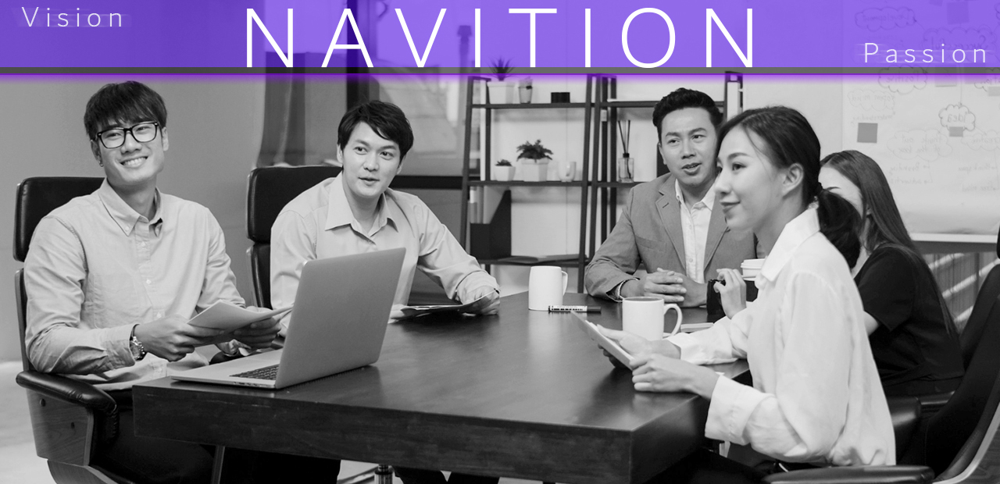

We are a small team, but we enjoy growing every day together with our clients.
Our goal: To become the leading AI-driven digital transformation service provider in Korean.

About Navition AI
Navition AI Technology Transformation Solutions
At Navition AI, we specialize in guiding traditional small businesses through their AI transformation journey—offering smart, scalable tech solutions and personalized support to help them thrive in a changing world.
Harnessing the power of AI, we specialize in delivering tailored solutions that drive business innovation. As a dynamic and agile team, we offer deep expertise in AI technologies and machine learning applications, crafting customized solutions that meet the specific needs of each business.
By leveraging advanced AI algorithms and machine learning models, we help companies optimize operations, enhance customer experiences, automate workflows, and unlock valuable data insights. Whether it's predictive analytics, natural language processing (NLP), or computer vision, our expertise in these fields enables businesses to make smarter decisions and improve overall efficiency.
Unlike larger corporations, we provide the flexibility to adapt quickly and offer high-quality, cost-effective solutions. This ability to personalize and deliver with precision ensures that we can meet your unique business challenges without the overhead of larger organizations.
AI is more than just a trend; it’s a powerful tool to drive business growth and transformation. With a focus on measurable results and seamless integration, our solutions empower businesses to stay ahead in a fast-evolving marketplace.
Let's collaborate to create AI-driven solutions that deliver tangible results and support your business’s long-term success.
Predictive analytics for customer churn, utilizing machine learning algorithms such as Random Forest to analyze and predict customer behavior.
from sklearn.model_selection import train_test_split
from sklearn.ensemble import RandomForestClassifier
from sklearn.metrics import accuracy_score
# Preparing data
X = customer_data.drop('churn', axis=1)
y = customer_data['churn']
# Splitting data
X_train, X_test, y_train, y_test = train_test_split(X, y, test_size=0.2, random_state=42)
# Model training
model = RandomForestClassifier(n_estimators=100, random_state=42)
model.fit(X_train, y_train)
# Predictions and evaluation
y_pred = model.predict(X_test)
accuracy = accuracy_score(y_test, y_pred)
print(f'Accuracy: {accuracy}')
Leveraging advanced NLP models to analyze customer sentiment in real-time, helping businesses understand customer feedback and improve engagement.
from transformers import pipeline
# Load pre-trained sentiment analysis model
sentiment_analyzer = pipeline('sentiment-analysis')
# Sample text
text = "This product is fantastic! I love it!"
# Analyze sentiment
result = sentiment_analyzer(text)
print(result)
Sales Prediction
Language: R | Technology: Time Series Forecasting (ARIMA)
Using time series forecasting to predict future sales, enabling better planning and inventory management for businesses.
library(forecast)
# Load sales data
sales_data <- ts(sales_data, frequency=12, start=c(2015, 1))
# Fit ARIMA model
model <- auto.arima(sales_data)
# Forecasting next 12 months
forecasted_values <- forecast(model, h=12)
plot(forecasted_values)
Implementing an AI-driven chatbot that improves customer support by understanding and responding to natural language queries effectively.
# Import necessary libraries
import tensorflow as tf
from tensorflow.keras.models import Sequential
from tensorflow.keras.layers import Dense, LSTM, Embedding, SpatialDropout1D
from tensorflow.keras.preprocessing.sequence import pad_sequences
from sklearn.preprocessing import LabelEncoder
import numpy as np
# Sample data (in real application, you would load your training data here)
training_sentences = ["Hi", "How are you?", "What's your name?", "Tell me a joke", "Goodbye"]
training_labels = ["greeting", "greeting", "name_query", "joke_request", "goodbye"]
# Preprocess data
encoder = LabelEncoder()
training_labels_encoded = encoder.fit_transform(training_labels)
# Tokenizing the sentences
from tensorflow.keras.preprocessing.text import Tokenizer
tokenizer = Tokenizer()
tokenizer.fit_on_texts(training_sentences)
X = tokenizer.texts_to_sequences(training_sentences)
X = pad_sequences(X, padding='post')
# Building the model
model = Sequential()
model.add(Embedding(input_dim=1000, output_dim=100, input_length=X.shape[1]))
model.add(SpatialDropout1D(0.2))
model.add(LSTM(100, dropout=0.2, recurrent_dropout=0.2))
model.add(Dense(len(set(training_labels)), activation='softmax'))
# Compile the model
model.compile(loss='sparse_categorical_crossentropy', optimizer='adam', metrics=['accuracy'])
# Train the model (In real application, use real data and labels)
model.fit(X, np.array(training_labels_encoded), epochs=5, batch_size=10)
# Sample function to predict the intent of a new sentence
def predict_intent(text):
seq = tokenizer.texts_to_sequences([text])
padded = pad_sequences(seq, maxlen=X.shape[1], padding='post')
prediction = model.predict(padded)
intent = encoder.inverse_transform([np.argmax(prediction)])
return intent[0]
# Testing the model with a new sentence
user_input = "Hello there"
predicted_intent = predict_intent(user_input)
print(f"The predicted intent for '{user_input}' is: {predicted_intent}")
Language: Python | Technology: Deep Learning (LSTM, Keras)
Using recurrent neural networks (LSTM) to accurately predict product demand trends and help businesses optimize inventory and logistics planning.
from tensorflow.keras.models import Sequential
from tensorflow.keras.layers import LSTM, Dense
import numpy as np
# Sample data: time series reshaped to (samples, time_steps, features)
X = np.random.rand(100, 10, 1)
y = np.random.rand(100)
# Build LSTM model
model = Sequential()
model.add(LSTM(50, activation='relu', input_shape=(10, 1)))
model.add(Dense(1))
model.compile(optimizer='adam', loss='mse')
model.fit(X, y, epochs=10, verbose=1)
Scoring and ranking potential sales leads based on behavior and profile data using classification models to improve conversion rates.
from sklearn.linear_model import LogisticRegression
from sklearn.model_selection import train_test_split
# Example feature set
X = lead_data[['visit_count', 'industry_score', 'email_opened']]
y = lead_data['converted']
X_train, X_test, y_train, y_test = train_test_split(X, y, test_size=0.2)
model = LogisticRegression()
model.fit(X_train, y_train)
predictions = model.predict(X_test)
print(predictions)
Order and Reservation System Automation
We specialize in transforming traditional order and reservation systems through AI-powered automation solutions. By integrating intelligent algorithms and real-time data processing, we help businesses reduce manual input errors, optimize booking flows, and enhance customer experience. Our AI-driven enhancements include:
Demand Forecasting: Utilizing machine learning models to predict booking trends and peak times, enabling better resource allocation and capacity planning.
Dynamic Scheduling: Applying reinforcement learning and optimization algorithms to automatically adjust available slots, cancellations, and waitlists, maximizing utilization.
Natural Language Interfaces: Implementing NLP-powered chatbots and voice assistants to allow customers to make, modify, or cancel reservations effortlessly via conversational AI.
Fraud Detection and Validation: Employing anomaly detection models to identify suspicious bookings or double entries, ensuring system integrity and reducing revenue loss.
Seamless Integration: Upgrading legacy systems with APIs and AI microservices that enable scalable, real-time data synchronization and analytics dashboards for operational insights.
Our solutions not only improve operational efficiency but also provide actionable insights to drive smarter business decisions, giving traditional enterprises a competitive edge in the evolving digital landscape.
More Business Use Cases
Below are 6 advanced AI transformation use cases with code samples and detailed technical solution descriptions that showcase our startup’s expertise in empowering traditional small businesses.
Intelligent Customer Support Automation
# Description: Leveraged state-of-the-art NLP models (BERT, RoBERTa) to classify customer intents from chat logs,
# enabling a 40% reduction in average response time and freeing up human agents for complex queries.
def smart_customer_support(query):
# Pre-trained intent classification pipeline
intents = ['refund', 'order_status', 'product_info', 'technical_support']
matched_intent = nlp_intent_model.predict(query)
response = response_mapping.get(matched_intent, "Thank you for reaching out! A support agent will contact you shortly.")
return response
Sales Forecasting
# Description: Implemented ARIMA and Prophet models on 3 years of historical POS data to forecast daily sales,
# achieving inventory turnover improvement by 25% and reducing overstock costs.
def sales_forecast(time_series_data):
from statsmodels.tsa.arima.model import ARIMA
model = ARIMA(time_series_data, order=(5,1,0))
model_fit = model.fit()
forecast = model_fit.forecast(steps=30)
return forecast
Customer Churn Prediction
# Description: Built a Random Forest classifier using customer transaction, support tickets, and engagement data,
# enabling early detection of churn with 85% accuracy and driving targeted retention campaigns.
def churn_prediction(customer_features):
from sklearn.ensemble import RandomForestClassifier
model = RandomForestClassifier(n_estimators=100, max_depth=10)
model.fit(X_train, y_train)
risk = model.predict_proba(customer_features)[:,1]
return risk
Product Recommendation System
# Description: Developed a hybrid recommendation engine combining collaborative filtering and content-based filtering,
# increasing average order value by 15% through personalized product suggestions.
def product_recommendation(user_id, user_item_matrix):
from sklearn.metrics.pairwise import cosine_similarity
user_sim = cosine_similarity(user_item_matrix)
similar_users = user_sim[user_id].argsort()[::-1][1:6]
recommended_products = aggregate_products(similar_users)
return recommended_products
Automated Data Cleaning Pipeline
# Description: Designed an ETL pipeline using Python and Pandas to automatically detect and correct data anomalies,
# reducing data preprocessing time by 60% and improving model training data quality.
def clean_data_pipeline(raw_data):
import pandas as pd
df = pd.DataFrame(raw_data)
df.dropna(inplace=True)
df = df[df['value'] >= 0]
df['date'] = pd.to_datetime(df['date'])
df['category'] = df['category'].fillna('Unknown')
return df
Social Media Sentiment Analysis
# Description: Applied fine-tuned transformer models (e.g., BERT, RoBERTa) to classify social media posts sentiment,
# providing weekly sentiment reports that informed targeted marketing campaigns and brand reputation management.
def sentiment_analysis(text):
sentiment = sentiment_model.predict(text)
return sentiment
Technical Solution & Impact Summary
Case
Technical Solution & Impact
NLP-powered intent classification: Integrated pre-trained transformer models to automate customer support, cutting average response time by 40% and increasing customer satisfaction.
Advanced time series forecasting: Leveraged ARIMA and Facebook Prophet models on multi-year sales data, optimizing inventory management and reducing overstock by 25%.
Customer churn prediction: Built Random Forest model utilizing multi-dimensional customer data, achieving 85% accuracy to proactively retain high-risk customers.
Hybrid recommendation engine: Combined collaborative filtering with content-based methods, leading to a 15% uplift in average order value through personalized suggestions.
Robust ETL and data cleaning: Automated data anomaly detection and imputation, slashing preprocessing times by over half and enhancing downstream AI model accuracy.
Sentiment analysis with fine-tuned transformers: Delivered actionable sentiment insights from social media, enabling brands to adjust campaigns dynamically and improve reputation management.
Navition Transformation Services
We provide comprehensive, AI-driven technology solutions designed to accelerate your business transformation and unlock new growth opportunities. Our expertise covers the full spectrum of AI capabilities to ensure your organization benefits from cutting-edge innovation:
Machine Learning for Automation and Workflow Optimization
Harness advanced machine learning algorithms to automate repetitive tasks, streamline complex workflows, and improve operational efficiency. From predictive maintenance to intelligent process automation, our solutions reduce manual effort and minimize errors, empowering your team to focus on strategic priorities.
Custom AI Solutions Tailored to Your Business Needs
We design and implement bespoke AI models and systems that align precisely with your unique business challenges and objectives. Leveraging deep learning, reinforcement learning, and domain-specific data, our customized solutions drive measurable impact across marketing, sales, supply chain, and customer service.
Natural Language Processing (NLP) for Enhanced Customer Interaction
Utilize state-of-the-art NLP techniques to understand, interpret, and generate human language. Our AI-powered chatbots, sentiment analysis tools, and voice assistants enable seamless, personalized communication with your customers — improving engagement, satisfaction, and retention.
Predictive Analytics and Data Insights
Transform your historical and real-time data into actionable insights with predictive analytics powered by robust statistical models and AI algorithms. Forecast trends, identify risks, and uncover hidden opportunities to make smarter, data-driven decisions that fuel business growth.
Computer Vision for Object Detection and Visual Analysis
Implement cutting-edge computer vision technologies to analyze images and videos for quality control, security monitoring, inventory management, and customer behavior analysis. Our solutions leverage convolutional neural networks (CNNs) and real-time processing to extract meaningful visual information that supports operational excellence.
 About Navition AI
About Navition AI Navition AI Focus
Navition AI Focus Order and Reservation System Automation
Order and Reservation System Automation More Business Use Cases
More Business Use Cases Navition Transformation Services
Navition Transformation Services Our Team
Our Team Contact Us
Contact Us